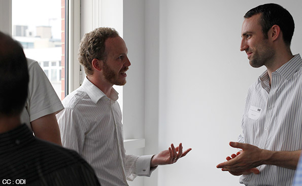

ODI Welcomes New Members



The ODI has announced that Telefónica Dynamic Insights and Quanta Computer are amongst 25 organisations to join its membership programme in the past four months, bringing the total number to 27.
The ODI has four tiers of membership to choose from: Partner, Sponsor, Member and Supporter.
Partners
Telefónica Dynamic Insights and Quanta Computer join as Partners alongside Virgin Media who came on board in March.
Gavin Starks, ODI CEO said:
“From telecommunications to law, big-data to business education, these companies are showing leadership in open data. With over 20 new commercial members in just 4 months, we are seeing the realisation that there is significant economic value emerging in this area. Using open data to deliver new products and services, innovators are creating value for businesses, and society.”
Telefónica Dynamic Insights is a global business unit of Telefónica which is focused on unlocking the potential opportunities for creating value from ‘big data’ CEO, Steve Alder said:
“In this new partnership, we are excited about working with the ODI to explore how anonymised and aggregated data can be used in a responsible way to deliver benefits back to business and society. We look forward to kicking off our collaboration with a ‘data-thon’ at Campus Party – Europe’s biggest technology festival – at The O2 in London in September.”
Quanta Computer Inc. is the largest notebook computer original design manufacturer (ODM) company in the world. CTO, Dr. Ted Chang said:
“We are excited to team up with ODI on our research and development efforts to explore and cultivate the great value out of big data in the open space.”
Sponsors
Alongside the two new partners, four companies are joining the ODI as Sponsors: BPE Innovation, NTT DATA, Precise Media and Rackspace® Hosting. They are joining alongside existing sponsor, Which?.
BPE Partner, Rob Bryan said:
"As the only law practice dedicated to UK STEM, we see this collaboration with the ODI as a great opportunity to bring our expertise to the growing open data market. Our team of lawyers looks forward to working with the ODI and its various partners, advising on the best ways to collate, share, disseminate and maximise the value of open data "
Anna Price, NTT DATA Head of Public Sector and Financial Services, said:
“We’re delighted to be working with the ODI, its start-up organisations and experts, helping businesses to blend open data with their own enterprise data to create added value. ”
Precise Media MD, Keir Fawcus said:
“We are excited to be working with the ODI and look forward to collaborating with their team and other experts. This gives us a valuable opportunity to help organisations better understand the important trends and influences impacting on their current and future business.”
Rackspace’s John Webb said:
"We are looking forward to working closely with the ODI on open data initiatives in the future. There is a natural fit between The ODI's mission and objectives and Rackspace's commitment to open standards and playing an active role in the open community. We believe that an open approach to cloud computing gives customers greater choice, freedom and flexibility, and that's why we founded OpenStack, the open source cloud computing platform. Through our collaboration with The ODI we aim to build awareness and educate the wider business and tech communities on the benefits of open source, open standards and open data."
Members
EyeHub and Mydex have joined as ODI Members. EyeHub showcases applications for personal security and protection of possessions as a means of demonstrating the powerful impact to a community that linked and open data can offer. Mydex Data Services Community Interest Company will help individuals to realize the value from their own data by giving them transparent, trustworthy access and control of their personal data and how it is used.
Supporters
Also joining the ODI at Supporter level are: The Audience Agency, BES Manchester Business School, Cogent Analytics, Crowdmixx Labs, Dialogue by Design, Doorda, FlyingBinary, Horizon Digital Economy Research, import.io, JC Analytics, Lokku, Matrix Knowledge, OCSI, ScraperWiki, Snips, Systems in Context and 100% Open.
Full details of all the organisations that are part of the ODI membership programme can be found in a Members’ Directory.